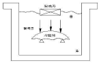
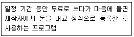

방사선비파괴검사기능사 (2010-10-03 기출문제)
1과목: 방사선투과시험법
1. 와전류탐상시험의 기본 원리로 옳은 것은?
- 누설흐름의 원리
- 전자유도의 원리
- 인장강도의 원리
- 잔류자계의 원리
(정답률: 85%)

2. 모세관 현상을 이용한 비파괴검사법은?
- 자분탐상시험
- 침투탐상시험
- 방사선투과시험
- 초음파탐상시험
(정답률: 80%)
3. 초음파탐상시험을 다른 비파괴검사와 비교했을 때의 장점이 아닌 것은?
- 두꺼운 시험체 내부를 검사할 수 있다.
- 시험체내의 작은 결함에 대한 검사가 가능하다.
- 어떤 물체의 한쪽 면만으로도 검사가 가능하다.
- 표면이 열려있는 미세 결함 검출에 매우 우수하다.
(정답률: 알수없음)
4. 그림에서와 같이 시험체 속으로 초음파(에너지)가 전달될 때 초음파 선속은 어떻게 되는가?

- 시험체내에서 퍼지게 된다.
- 시험체내에서 한 점에 집중된다.
- 시험체내에서 평행한 직선으로 전달된다.
- 시험체 표면에서 모두 반사되어 들어가지 못한다.
(정답률: 알수없음)
5. 방사선투과시험에서 재질의 두께, 관전압, 노출시간 등의 관계를 도표로 나타낸 것은?
- 막대도표
- 특성곡선
- H와 D곡선
- 노출선도(노출도표)
(정답률: 알수없음)
6. 방사선투과시험의 형광스크린에 대한 설명 중 옳은 것은?
- 주로 감마선을 이용할 때 사용한다.
- 주로 조사시간을 단축하기 위하여 사용한다.
- 경금속을 검사할 때 필름 감광속도를 느리게 하기위해 사용한다.
- 조사시간을 길게 하여 납(Pb)스크린보다 값이 저렴해서 경제적이다.
(정답률: 37%)
7. 누설검사의 1atm을 다른 단위로 환산한 것 중 틀린것은?
- 14.7psi
- 760torr
- 980kg/cm2
- 101.3kPa
(정답률: 67%)
8. 비파괴검사에서 봉(Bar) 내의 비금속 개재물을 무엇이라 하는가?
- 겹침(lap)
- 용락(burn through)
- 언더컷(under cut)
- 스트링거(stringer)
(정답률: 알수없음)
9. 자분탐상시험 후 탈자를 하지 않아도 지장이 없는 것은?
- 자분탐상시험 후 열처리를 해야 할 경우
- 자분탐상시험 후 페인트칠을 해야 할 경우
- 자분탐상시험 후 전기 아크용접을 실시해야 할 경우
- 잔류자계가 측정계기에 영향을 미칠 우려가 있을 경우
(정답률: 60%)
10. 와전류탐상시험에 대한 설명 중 틀린 것은?
- 시험코일의 임피던스변화를 측정하여 결함을 식별 한다.
- 접속식 탐상법을 적용하므로서 표피효과가 발생하지 않는다.
- 철, 비철 재료의 파이프, 와이어 등 표면 또는 표면 근처 결함을 검출한다.
- 시험체 표층부의 결함에 의해 발생된 와전류의 변화를 측정하여 결함을 식별한다.
(정답률: 59%)
11. 고속 자동탐상이 가능하고 표면 결함의 검출 능력이 우수하며 전도성 재료에 적용할 수 있는 비파괴검사법은?
- 자분탐상시험
- 음향방출시험
- 와전류탐상시험
- 초음파탐상시험
(정답률: 75%)
12. 비파괴검사의 적용에 대한 설명 중 옳은 것은?
- 담금질 경화층의 깊이나 막두께 측정에는 와전류탐상시험을 이용한다.
- 알루미늄 합금의 재질이나 열처리 상태를 판별하기 위해서는 누설검사가 유용하다.
- 구조상 분해할 수 없는 전기용품 내부의 배선 상황을 조사할 때는 침투탐상시험이 유용하다.
- 구조재 재질의 적합 여부 및 규정된 내부 결함의 가부를 판정하기 위해서는 주로 육안검사를 이용한다.
(정답률: 알수없음)
13. 맞대기 용접부의 덧살(Reinforcement)을 그라인더로 제거해서 판형태로 만들었다. 덧살이 제거된 강용접부의 연마균열 검사에 적합한 비파괴검사만의 조합으로 옳은 것은?
- 자분탐상검사와 침투탐상검사
- 침투탐상검사와 음향방출검사
- 방사선투과검사와 침투탐상검사
- 초음파탐상검사와 자분탐상검사
(정답률: 40%)
14. 누설검사의 절대 압력,게이지 압력, 대기 압력 및 진공 압력과의 상관 관계식으로 옳은 것은?
- 절대 압력 = 진공 압력 - 대기 압력
- 절대 압력 = 대기 압력 + 진공 압력
- 절대 압력 = 대기 압력 - 게이지 압력
- 절대 압력 = 게이지 압력 + 대기 압력
(정답률: 10%)
15. 방사선 투과사진의 명료도에 영향을 미치는 기하학적 요인이 아닌 것은?
- 필름의 종류
- 선원의 크기
- 선원과 필름 사이 거리
- 증감지와 필름의 접촉상태
(정답률: 알수없음)
16. 휴대식 x선 발생장치는 제어기와 x선 발생기로 나누어지며 그 사이는 저압케이블로 연결되어 있다. 다음중 제어기 부위에 속해 있는 장치만으로 조합된 것은?
- 조정기, 개폐기
- 냉각팬, 고압변압기
- 필라멘트, 트랜스
- x선관, 온도 릴레이
(정답률: 50%)
17. 다음 중 가장 무거운 입자는?
- α입자
- β입자
- 중성자
- γ입자
(정답률: 알수없음)
18. 기하학적 불선명도와 관련하여 좋은 식별도를 얻기 위한 조건으로 옳지 않은 것은?
- 선원의 크기가 작은 x선 장치를 사용한다.
- 필름-시험체 사이의 거리를 가능한 한 멀리한다.
- 선원-시험체 사이의 거리를 가능한 한 멀리한다.
- 초점을 시험체의 수직 중심선상에 정확히 놓는다.
(정답률: 55%)
19. 220kV에서의 철과 동의 방사선 흡수에 대한 등가 인자가 1.0과 1.4일 때,10mm두께의 동판을 투과검사하려면 철판 몇 mm때의 노출시간과 같은가?
- 7.1mm
- 10mm
- 14mm
- 24mm
(정답률: 54%)
20. 방사선 투과사진상 두 부위의 농도차를 무엇이라 하는가?
- 방사선 투과사진의 감도
- 방사선 투과사진의 흑화도
- 방사선 투과사진의 선예도
- 방사선 투과사진의 콘트라스트
(정답률: 46%)
2과목: 방사선안전관리 관련규격
21. x선 발생장치를 장시간 사용하지 않고 보관할 때의 조치 내용으로 옳은 것은?
- 방사창을 기름칠하여 둔다.
- 35℃ 이상인 창고에 보관한다.
- 최소한 1개월에 1번 정도 예열한다.
- 타게트를 분해, 방수처리하여 보관한다.
(정답률: 59%)
22. 노출도표에 의한 X선 투과촬영에서 촬영 전에 알고 있어야 할 정보가 아닌 것은?
- 시험체의 재질
- 결함의 종류와 크기
- 관전압 및 관전류
- 필름 및 증감지의 종류
(정답률: 알수없음)
23. X선관에 관한 설명으로 옳지 않은 것은?
- 음극은 필라멘트와 포커싱컵으로 되어있다.
- 양극의 표전물질은 열전도성이 좋아야한다.
- 초점의 크기는 표적물질의 크기로 조절한다.
- X선관의 유리관 모양은 튜브에 연결되는 전기회로에 좌우된다.
(정답률: 34%)
24. 3Ci의 Ir-192선원은 1년 후 약 몇 mCi가 되겠는가? (단, Ir-192의 반감기는 75일이다.)
- 52mCi
- 103mCi
- 213mCi
- 425mCi
(정답률: 50%)
25. 방사선 투과검사시 필름의 현상처리 전에 나타난 인공결함으로 볼 수 없는 것은?
- 눌림 표시
- 구겨짐 표시
- 정전기 표시
- 언더컷 표시
(정답률: 67%)
26. 방사선 작업종사자 및 수시출입자에 대한 방사선의 쟁해를 방지하기 위한 조치에 관한 사항으로 옳지 않은 것은?
- 수시출입자의 피폭방사선량이 선량한도를 초과하지 않아야한다.
- 방사선 작업종사자의 피폭방사전량이 선량한도를 초과하지 않아야한다.
- 방사선 작업종사자가 호흡하는 공기 중의 방사성 물질의 농도가 유도공기중농도(DAC)를 초과하지 않아야한다.
- 저장시설 및 보관시설에는 눈에 띄기 쉬운 곳에 취급상의 주의사랑을 게시하여야 하나, 사용시설에는 필요한 경우 생략할 수 있다.
(정답률: 60%)
27. 다음 중 γ선에 대한 감수성이 가장 큰 인체 부위는?
- 근육
- 생식선
- 피부
- 조혈장기
(정답률: 58%)
28. 알루미늄평판 접합 용접부의 방사선 투과시험방법(KS D 0242)에서 실제로 덧살을 측정하지 않은 경우 용접부의 형상이 한쪽면 덧살 있음이고, 모재의 두께가 10mm미만 일 때 사용되는 계조계의 종류로 옳은 것은?
- D1형
- D2형
- E2형
- E3형
(정답률: 37%)
29. 방사선을 측정할 때 사용되는 감마상수 (γ-fator)에 관한 설명으로 옳은 것은?
- 반감기의 다른 표현이다.
- 방사능 측정시의 보정인자를 나타낸다.
- 방사성 물질의 단위를 나타내는 것이다.
- 방사성 물질 1Ci의 점선원에서 1m거리에 1시간 조사되는 조사선량을 나타낸다.
(정답률: 47%)
30. 배관 용접부의 비파괴 시험방법(KS B 0888)에서 상용압력 0.98MPa이상의 배관으로, 바깥지름 100mm 이상 2000mm미만, 살두께 6mm이상 40mm이하의 원둘레 맞대기 용접부의 비파괴 검사법에 대하여 규정하고 있다. 이 규격에 규정되어 있는 촬영방법에 따라 관의 살두께가 9mm인 용접부를 A급 상질로 촬영하였을 때 투과 도계의 실별 최소 선지름은 얼마인가?
- 0.16mm
- 0.20mm
- 0.25mm
- 0.32mm
(정답률: 44%)
31. 서베이미터로 측정된 값이 0.5R/h이면 100mrem의 피폭선량을 받기까지는 얼마동안 그 자리에 있어야 하는가?
- 12분
- 14분
- 18분
- 20분
(정답률: 43%)
32. 외부 방사선 피폭의 방어 원칙을 바르게 설명한 것은?
- 두껍게 차폐하고, 선원으로부터의 거리는 멀리 하며, 촬영시간은 짧게 한다.
- 두껍게 차폐하고, 선원으로부터의 거리는 멀리 하며, 촬영시간은 길게 한다.
- 두껍게 차폐하고, 선원으로부터의 거리는 가깝게하며, 촬영시간은 짧게 한다.
- 두껍게 차폐하고, 선원으로부터의 거리는 가깝게하며, 촬영시간은 길게 한다.
(정답률: 75%)
33. 강 용접 이음부의 방사선 투과시험방법(KS B0845)에 따라 강판의 맞대기 이음 용접부를 투과검사 할 경우 상질의 종류가 A급일 때 요구되는 규정된 두과사진의 농도범위로 옳은 것은?
- 1.0 이상 2.5 이하
- 1.3 이상 4.0 이하
- 2.0 이상 3.5 이하
- 1.8 이상 4.0 이하
(정답률: 43%)
34. 1Ci의 Ir-192 선원이 30cm떨어진 곳에서의 선량률이 59 R/h 이었다. 동일한 거리에서 10 Ci의 Ir-192 선원이 있다면 이때 선량률은 얼마인가?
- 5.9 R/h
- 34.8 R/h
- 59 R/h
- 590 R/h
(정답률: 40%)
35. 주강품의 방사선 투과시험방법(KS D 0227)에 따른 촬영배치에 관한 설명으로 옳지 않은 것은?
- 계조계는 원칙적으로 투과사진마다 1개 이상으로 한다.
- 관 모양의 시험체는 원칙적으로 시험부의 선원쪽 표면위에 투과도계를 놓는다.
- 투과도계는 투과 두께의 변화가 적은 경우에 그 투과두께를 대표하는 곳에 1개 놓는다.
- 투과도계는 투과 두께의 변화가 큰 경우에 두꺼운 부분을 대표하는 곳 및 얇은 부분을 대표하는 곳에 각각 1개씩 놓아야한다.
(정답률: 46%)
36. 다음 중 원자력법 시행령에서 규정하고 있는 “방사선”에 해당되지 않는 것은?
- 중성자선
- 감마선 및 엑스선
- 1만 전자볼트 이상의 에너지를 가진 전자선
- 알파선, 중양자선, 양자선, 베타선 기타 중하전입자선
(정답률: 알수없음)
37. 외부 피폭선량 측정에 사용하는 필름뱃지에 관한 설명으로 옳지 않은 것은?
- 필름의 흑화농도를 측정하여 피폭선량을 측정한다.
- TLD와는 달리 잠상퇴행에 의한 감도의 감소가 없다.
- 금속필터를 사용하여 입사 방사선의 에너지를 결정한다.
- 기계적압력, 온도 상승 또는 빛에 노출되었을 때 흐림 현상(Fogging)이 발생한다.
(정답률: 58%)
38. 주강품의 방사선 투과시험(KS D 0227)에 의하면 두께 130mm되는 주물에 방사선 투과시험을 시행한 결과 16mm직경의 블로홀이 1개 발견되었다면, 홈의 분류상 몇 류에 해단되는가?
- 1류
- 2류
- 5류
- 6류
(정답률: 16%)
39. 강 용접 이음부의 방사선 투과시험방법(KS D0845)에 따라 강판 맞대기 용접 이음부에 대한 검사를 수행할 때 촬영배치에서 선원과 시험부의 선원측 표면 간 거리(L1)는 시험부의 유효길이(L3)의 n배 이상으로 해야 한다고 규정하고 있다. A급 상질을 적용할 경우 계수n의 값은 얼마인가?
- 1
- 2
- 3
- 4
(정답률: 64%)
40. 강 용접 이음부의 방사선 투과시험방법(KS B0845)에서 사용되는 계조계 15형의 모재 두께 한계는 얼마인가?
- 20mm이하
- 30mm이하
- 40mm이하
- 50mm이하
(정답률: 50%)
3과목: 금속재료일반 및 용접 일반
41. 다음이 설명하고 있는 것은?

- 데모 버전
- 프리웨어
- 셰어웨어
- 베타버전
(정답률: 알수없음)
42. 인터넷에서 사용되는 URL이란?
- 인터넷에서 정보를 검색하는 엔진의 일종이다.
- 인터넷에서 메일을 전송하는 프로그램이다.
- 인터넷에서 파일을 전송할 때 필요한 프로그램이다.
- 인터넷에 있는 정보의 위치를 알려주는 표준이다.
(정답률: 20%)
43. 전자우편을 사용 할 때의 네티켓으로 틀린 것은?
- 자신의 비밀번호를 타인에게 절대 공개해서는 안된다.
- 메일을 보내기 전에 주소가 올바른지 확인한다.
- 선정적이거나 폭력적인 제목은 지양한다.
- 제목은 메시지 내용을 상세하게 풀어서 적어야한다.
(정답률: 20%)
44. 네트워크에 연결된 컴퓨터 시스템의 운영체제, 응용프로그램, 인터넷 서버 등의 취약점을 이용한 침입을 방지하는 기술은?
- 시스템 보안
- 테이터 보안
- 통신 규제
- 통신 검열
(정답률: 37%)
45. 인터넷과 동일한 소프트웨어를 이용하는 기업이나 기관 등의 내부 전용 네트워크로 전자메일 시스템, 전자결재 시스템 등의 방식을 통해 정보교환의 효율성을 가져올 수 있도록 하는 망은?
- 인트라넷
- 엑스트라넷
- 홈페이지
- 웹
(정답률: 알수없음)
46. 저용융점 합금의 용융 온도는 약 몇 ℃ 이하 인가?
- 250℃ 이하
- 350℃ 이하
- 450℃ 이하
- 550℃ 이하
(정답률: 50%)
47. 알루미늄(AL)에 내식성을 증가시키지 위해서 Mg, Si, Mn등을 첨가한 가공용 알루미늄 합금 중 내식성 알루미늄 합금이 아닌 것은?
- 알민
- 로엑스
- 알드리
- 하이드로날륨
(정답률: 42%)
48. 샤르피 충격시험에 대한 설명 중 틀린 것은?
- 인성 및 취성의 정도를 알아보는 시험이다.
- 시편에 미리 노치를 가공하여 노치인성을 나타낸다.
- 여러 온도에서 시험하여 연성-취성 천이온도를 알 수 있다.
- 연성파단면은 입상의 반짝거리는 벽개파단의 특징을 나타낸다.
(정답률: 알수없음)
49. Fe-C상태도에서 순철의 자기변태점은?
- 210℃
- 768℃
- 910℃
- 1410℃
(정답률: 47%)
50. 다음 금속 중 용융상태에서 응고할 때 팽창하는 것은?
- Sn
- Zn
- Mo
- Bi
(정답률: 38%)
51. 열처리 TTT곡선에서 TTT가 의미하는 것이 아닌것은?
- 온도
- 압력
- 시간
- 변태
(정답률: 알수없음)
52. 금속표면에서 스텔라이트, 초경합금 등의 금속을 용착시켜 표면 경화층을 만드는 방법은?
- 쇼트 피닝
- 금속용사법
- 금속침투법
- 하드페이싱
(정답률: 47%)
53. 동(Cu)합금 중에서 가장 큰 강도와 경도를 나타내며 내식성, 도전성, 내피로성 등이 우수하여 베어링, 스프링, 전기접전 및 전극재료 등으로 사용되는 재료는?
- 인(P) 청동
- 베릴륨(Be) 동
- 니켈(Ni) 청동
- 규소 (Si) 동
(정답률: 59%)
54. A3또는 A㎝ 선보다 30~50℃ 높은 온도로 가열한후 공기 중에 냉각하여 탄소강의 표준 조직을 검사하려면 어떤 열처리를 해야 하는가?
- 노멀라이징(불림)
- 어닐링(풀림)
- 퀜칭(담금질)
- 템퍼링(뜨임)
(정답률: 알수없음)
55. 켈밋(Kelmet)의 주성분으로 옳은 것은?
- Cu+Pb
- Fe+Zn
- Sn+Al
- Si+Co
(정답률: 50%)
56. 탄소 함유량으로 철강 재료를 분류한 것 중 틀린것은?
- 순철은 약 0.025%이하의 탄소함유량을 갖는다.
- 강은 약 0.2% 이하의 탄소함유량을 갖는다.
- 공석강은 약 0.8% 정도의 탄소함유량을 갖는다.
- 공정 주철은 약 4.3%정도의 탄소함유량을 갖는다.
(정답률: 알수없음)
57. 두 가지 이상의 금속원소가 간단 원자비로 결합되어 성분금속과는 다른 성질을 갖는 물질을 무엇이라 하는가?
- 공정 2원 흡금
- 금속간 화합물
- 침입형 고용체
- 전율가용 고용체
(정답률: 73%)
58. 피복 배합제 중 아크 안정제에 속하지 않는 것은?
- 석회석
- 알루미늄
- 산화티탄
- 규산나트륨
(정답률: 27%)
59. 가스용접에 사용되는 연료가스로서 갖추어야 할 성질 중 틀린 것은?
- 용융금속과 화학반응을 일으켜야 한다.
- 불꽃의 온도가 높아야 한다.
- 연소속도 빨라야 한다.
- 발열량이 커야 한다.
(정답률: 46%)
60. 용접봉 지름이 6mm, 용착효율이 65%인 피복 아크용접봉 200kg을 사용하여 얻을 수 있는 용착금속의 중량은?
- 130kg
- 200kg
- 184kg
- 1200kg
(정답률: 알수없음)